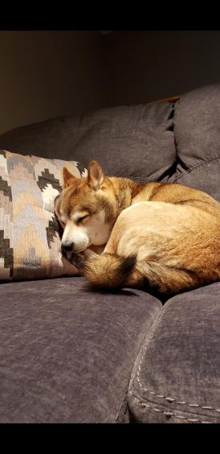
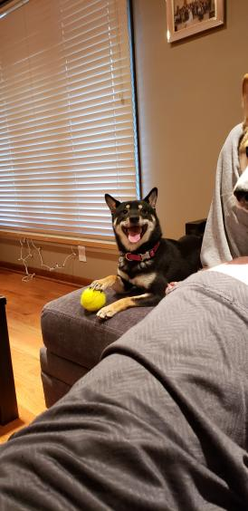
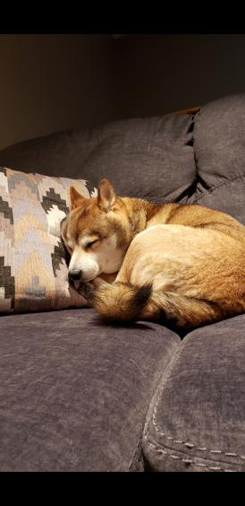
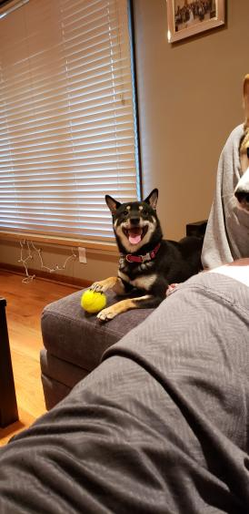
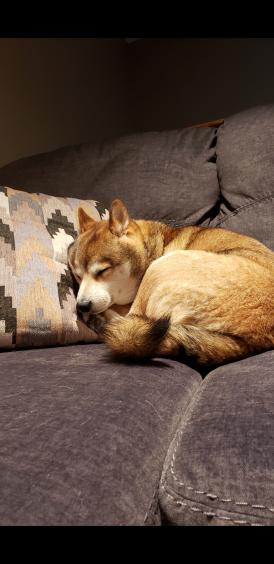
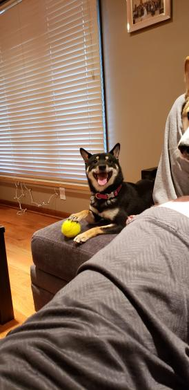

My wife is a 4th year medical student at UNMC. We have two dogs Purkinje and Popliteal who are both
shiba inu's.


The brown dog with the red border is Purkine who is almost 4 years old. The black and tan dog with the yellow border
is popliteal who is almost 2 years old. We enjoy going on walks and meeting other dogs. They love the snow and snuggling
with anyone!
 


